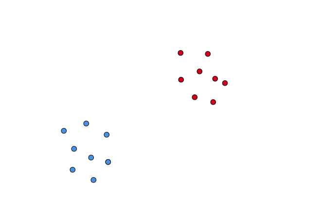
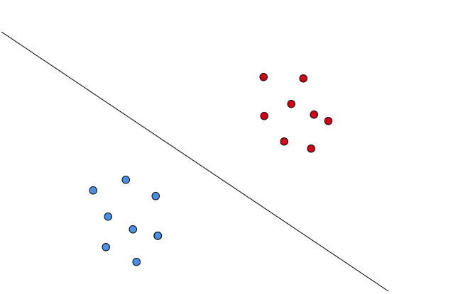
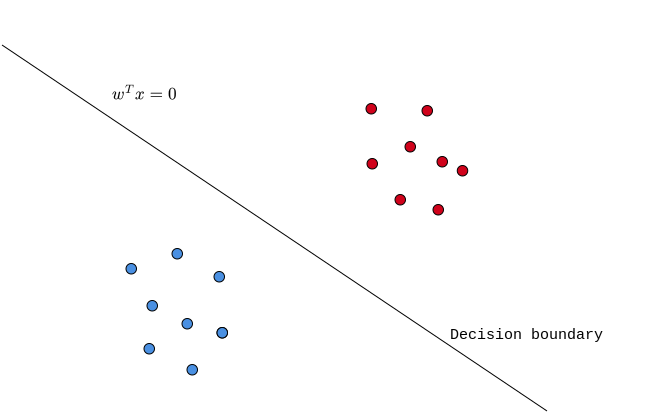
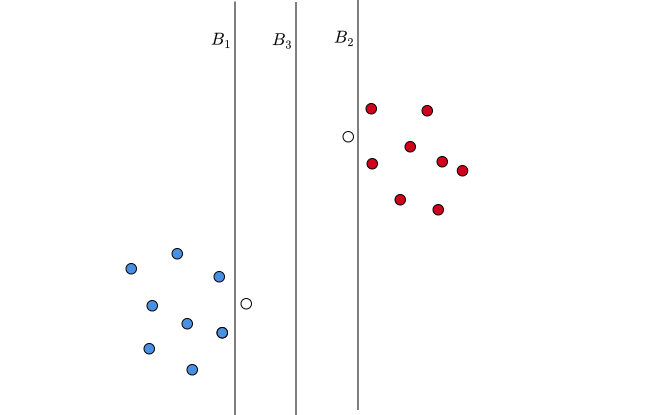

Machine Learning Techniques
Karthik Thiagarajan
Linear regression
Least square classification
Perceptron
Logistic regression
Naive Bayes
Softmax regression
Support Vector Machines (SVM)
Decision trees
Ensemble techniques
K-means clustering
Artificial Neural Networks


What is a common among all these models?

What is a common among all these models?

A decision boundary that is “pointo-phobic” is a good one.
Stay away from data-points of either class.
The most pointo-phobic boundary is the best one.
The “middle path”.